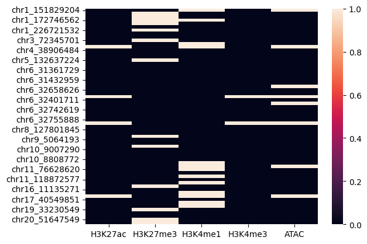
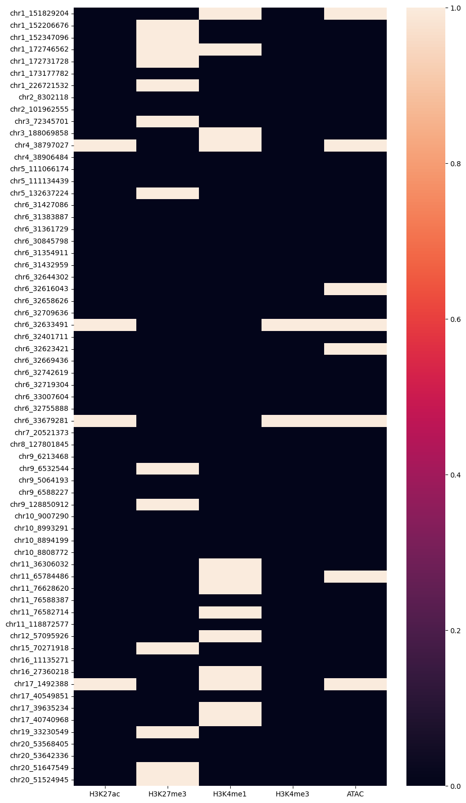
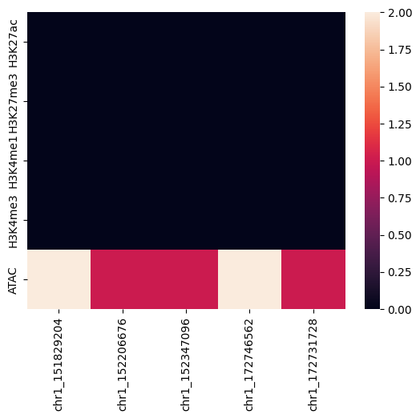

Code
import os,sys
import numpy as np
import pandas as pd
import matplotlib.pyplot as plt
import seaborn as snsimport os,sys
import numpy as np
import pandas as pd
import matplotlib.pyplot as plt
import seaborn as snspath_to_fine_mapped_loci = "/beagle3/haky/users/saideep/projects/aracena_modeling/SPrediXcan/sumstats_formatted/asthma_eczema_farreira_susie/all_SNPs_susie_filt.txt"
path_to_count_table = "/beagle3/haky/users/saideep/projects/aracena_modeling/Inputs/normalized_peak_data/"
window_size = 4
modality_pcs = {
"H3K27ac":{
"Flu":1,
"NI":1
},
"H3K27me3":{
"Flu":2,
"NI":1
},
"H3K4me1":{
"Flu":4,
"NI":2
},
"H3K4me3":{
"Flu":2,
"NI":2
},
"ATAC":{
"Flu":3,
"NI":3
}
}modality_match_vec = []
modalities_in_order = []
peak_chroms = []
peak_starts = []
peak_ends = []
for modality in modality_pcs.keys():
cur_count_file = os.path.join(path_to_count_table,f"fully_preprocessed_{modality}_{modality_pcs[modality]['Flu']}_{modality_pcs[modality]['NI']}.txt")
all_expression_ori = pd.read_csv(
cur_count_file,
sep=" ")
modalities_in_order.append(modality)
for region in all_expression_ori.index:
if len(region.split("_")) != 3:
continue
peak_chroms.append(region.split("_")[0])
peak_starts.append(int(region.split("_")[1]))
peak_ends.append(int(region.split("_")[2]))
modality_match_vec.append(modality)
peaks_df = pd.DataFrame({
"modality":modality_match_vec,
"peak_chrom":peak_chroms,
"peak_start":peak_starts,
"peak_end":peak_ends
})
peaks_df = peaks_df.sort_values(by=["peak_start"])
print(peaks_df.head()) modality peak_chrom peak_start peak_end
72431 H3K27me3 chr17 14 16603
255160 ATAC chr1 9998 11177
0 H3K27ac chr1 9999 10570
116691 H3K4me1 chr1 10003 10565
305016 ATAC chr18 10011 10920loaded_gwas_loci = pd.read_csv(path_to_fine_mapped_loci,sep="\t")
print(loaded_gwas_loci.head())
variable variable_prob cs SNP PIP \
0 389 0.938377 3 1_151829204_G_A 0.938377
1 989 0.907326 1 1_152206676_C_T 0.907326
2 1283 0.523677 2 1_152347096_T_C 0.523677
3 4956 0.981685 2 1_172746562_A_G 0.981685
4 4934 0.777214 1 1_172731728_G_A 0.777214
ldBlock
0 chr1_151566405_153208353
1 chr1_151566405_153208353
2 chr1_151566405_153208353
3 chr1_170588635_173128768
4 chr1_170588635_173128768 def check_SNP_in_peak(snp_chrom, snp_pos, peak_chrom, peak_start, peak_end):
if snp_chrom != peak_chrom:
return False
if snp_pos >= peak_start and snp_pos <= peak_end:
return True
return Falseloci_modality_dict = {}
peak_overlap_dict = {}
for index, row in loaded_gwas_loci.iterrows():
snp_chrom = "chr" + row["SNP"].split("_")[0]
snp_pos = int(row["SNP"].split("_")[1])
print(f"Checking SNP {snp_chrom}_{snp_pos}")
peak_overlap_dict[f"{snp_chrom}_{snp_pos}"] = []
loci_modality_dict[f"{snp_chrom}_{snp_pos}"] = {}
for modality in modalities_in_order:
loci_modality_dict[f"{snp_chrom}_{snp_pos}"][modality] = False
for index, row in peaks_df.iterrows():
peak_chrom = row["peak_chrom"]
peak_start = row["peak_start"]
peak_end = row["peak_end"]
peak_modality = row["modality"]
if check_SNP_in_peak(snp_chrom, snp_pos, peak_chrom, peak_start, peak_end):
peak_overlap_dict[f"{snp_chrom}_{snp_pos}"].append(True)
loci_modality_dict[f"{snp_chrom}_{snp_pos}"][peak_modality] = True
print(f"SNP {snp_chrom}_{snp_pos} is in peak {peak_chrom}_{peak_start}_{peak_end} for modality {peak_modality}")
else:
peak_overlap_dict[f"{snp_chrom}_{snp_pos}"].append(False)
peak_overlap_df = pd.DataFrame(peak_overlap_dict)
print(peak_overlap_df.head())
print(peak_overlap_df.shape)Checking SNP chr1_151829204
SNP chr1_151829204 is in peak chr1_151827109_151835830 for modality H3K4me1
SNP chr1_151829204 is in peak chr1_151828261_151833510 for modality ATAC
Checking SNP chr1_152206676
SNP chr1_152206676 is in peak chr1_152190924_152206901 for modality H3K27me3
Checking SNP chr1_152347096
SNP chr1_152347096 is in peak chr1_152342279_152357583 for modality H3K27me3
Checking SNP chr1_172746562
SNP chr1_172746562 is in peak chr1_172739939_172751744 for modality H3K27me3
SNP chr1_172746562 is in peak chr1_172746350_172749345 for modality H3K4me1
Checking SNP chr1_172731728
SNP chr1_172731728 is in peak chr1_172716156_172734966 for modality H3K27me3
Checking SNP chr1_173177782
Checking SNP chr1_226721532
SNP chr1_226721532 is in peak chr1_226715188_226723424 for modality H3K27me3
Checking SNP chr2_8302118
Checking SNP chr2_101962555
Checking SNP chr3_72345701
SNP chr3_72345701 is in peak chr3_72345428_72358627 for modality H3K27me3
Checking SNP chr3_188069858
SNP chr3_188069858 is in peak chr3_188064650_188071884 for modality H3K4me1
Checking SNP chr4_38797027
SNP chr4_38797027 is in peak chr4_38781173_38805506 for modality H3K4me1
SNP chr4_38797027 is in peak chr4_38792057_38797395 for modality H3K27ac
SNP chr4_38797027 is in peak chr4_38794925_38798128 for modality ATAC
Checking SNP chr4_38906484
Checking SNP chr5_111066174
Checking SNP chr5_111134439
Checking SNP chr5_132637224
SNP chr5_132637224 is in peak chr5_132623438_132675625 for modality H3K27me3
Checking SNP chr6_31427086
Checking SNP chr6_31383887
Checking SNP chr6_31361729
Checking SNP chr6_30845798
Checking SNP chr6_31354911
Checking SNP chr6_31432959
Checking SNP chr6_32644302
Checking SNP chr6_32616043
SNP chr6_32616043 is in peak chr6_32603992_32618470 for modality ATAC
Checking SNP chr6_32658626
Checking SNP chr6_32709636
Checking SNP chr6_32633491
SNP chr6_32633491 is in peak chr6_32619129_32637333 for modality ATAC
SNP chr6_32633491 is in peak chr6_32631450_32635219 for modality H3K4me3
SNP chr6_32633491 is in peak chr6_32631978_32637030 for modality H3K27ac
Checking SNP chr6_32401711
Checking SNP chr6_32623421
SNP chr6_32623421 is in peak chr6_32619129_32637333 for modality ATAC
Checking SNP chr6_32669436
Checking SNP chr6_32742619
Checking SNP chr6_32719304
Checking SNP chr6_33007604
Checking SNP chr6_32755888
Checking SNP chr6_33679281
SNP chr6_33679281 is in peak chr6_33678129_33680208 for modality H3K4me3
SNP chr6_33679281 is in peak chr6_33678250_33681529 for modality ATAC
SNP chr6_33679281 is in peak chr6_33678577_33679956 for modality H3K27ac
Checking SNP chr7_20521373
Checking SNP chr8_127801845
Checking SNP chr9_6213468
Checking SNP chr9_6532544
SNP chr9_6532544 is in peak chr9_6531416_6546294 for modality H3K27me3
Checking SNP chr9_5064193
Checking SNP chr9_6588227
Checking SNP chr9_128850912
SNP chr9_128850912 is in peak chr9_128776330_129002423 for modality H3K27me3
Checking SNP chr10_9007290
Checking SNP chr10_8993291
Checking SNP chr10_8894199
Checking SNP chr10_8808772
Checking SNP chr11_36306032
SNP chr11_36306032 is in peak chr11_36304085_36308715 for modality H3K4me1
Checking SNP chr11_65784486
SNP chr11_65784486 is in peak chr11_65774825_65790852 for modality H3K4me1
SNP chr11_65784486 is in peak chr11_65778814_65785404 for modality ATAC
Checking SNP chr11_76628620
SNP chr11_76628620 is in peak chr11_76627413_76631971 for modality H3K4me1
Checking SNP chr11_76588387
Checking SNP chr11_76582714
SNP chr11_76582714 is in peak chr11_76572323_76585953 for modality H3K4me1
Checking SNP chr11_118872577
Checking SNP chr12_57095926
SNP chr12_57095926 is in peak chr12_57091550_57105882 for modality H3K4me1
Checking SNP chr15_70271918
SNP chr15_70271918 is in peak chr15_70243419_70285512 for modality H3K27me3
Checking SNP chr16_11135271
Checking SNP chr16_27360218
SNP chr16_27360218 is in peak chr16_27355492_27360962 for modality H3K4me1
Checking SNP chr17_1492388
SNP chr17_1492388 is in peak chr17_1473996_1503437 for modality H3K4me1
SNP chr17_1492388 is in peak chr17_1488762_1496088 for modality H3K27ac
SNP chr17_1492388 is in peak chr17_1488816_1497458 for modality ATAC
Checking SNP chr17_40549851
Checking SNP chr17_39635234
SNP chr17_39635234 is in peak chr17_39632947_39638693 for modality H3K4me1
Checking SNP chr17_40740968
SNP chr17_40740968 is in peak chr17_40735463_40744465 for modality H3K4me1
Checking SNP chr19_33230549
SNP chr19_33230549 is in peak chr19_33213009_33263576 for modality H3K27me3
Checking SNP chr20_53568405
Checking SNP chr20_53642336
Checking SNP chr20_51647549
SNP chr20_51647549 is in peak chr20_51642475_51651540 for modality H3K27me3
Checking SNP chr20_51524945
SNP chr20_51524945 is in peak chr20_51515495_51526308 for modality H3K27me3
chr1_151829204 chr1_152206676 chr1_152347096 chr1_172746562 \
0 False False False False
1 False False False False
2 False False False False
3 False False False False
4 False False False False
chr1_172731728 chr1_173177782 chr1_226721532 chr2_8302118 \
0 False False False False
1 False False False False
2 False False False False
3 False False False False
4 False False False False
chr2_101962555 chr3_72345701 ... chr16_27360218 chr17_1492388 \
0 False False ... False False
1 False False ... False False
2 False False ... False False
3 False False ... False False
4 False False ... False False
chr17_40549851 chr17_39635234 chr17_40740968 chr19_33230549 \
0 False False False False
1 False False False False
2 False False False False
3 False False False False
4 False False False False
chr20_53568405 chr20_53642336 chr20_51647549 chr20_51524945
0 False False False False
1 False False False False
2 False False False False
3 False False False False
4 False False False False
[5 rows x 65 columns]
(373040, 65)
column_sums = peak_overlap_df.sum(axis=0)
column_sums.plot.bar()
plt.show()


fig, ax = plt.subplots(figsize=(10, 20))
sns.heatmap(loci_modality_df)
plt.show()
peaks_df_w_overlap = pd.concat([peaks_df,peak_overlap_df],axis=1)
peaks_df_w_overlap.to_csv("/beagle3/haky/users/saideep/github_repos/Daily-Blog-Sai/posts/2024-05-20-linearize_peak_EnPACT/peaks_with_overlap.csv",index=False)
loci_modality_df.to_csv("/beagle3/haky/users/saideep/github_repos/Daily-Blog-Sai/posts/2024-05-20-linearize_peak_EnPACT/loci_modality_df.csv",index=False)peaks_overlap_df_at_least_one_true = peak_overlap_df.sum(axis=1)loci_modality_df.shape(65, 5)print(peaks_df_w_overlap.shape)
loci_by_modality = {}
loci_count =0
for loci in loaded_gwas_loci["SNP"]:
print(f"Checking loci {loci}")
loci_trunc = "chr" + "_".join(loci.split("_")[0:2])
loci_by_modality[loci_trunc] = {}
for modality in modalities_in_order:
loci_by_modality[loci_trunc][modality] = 0
for peak in peaks_df_w_overlap.index:
# print(f"Checking peak {peak}")
# print(peaks_df_w_overlap.loc[peak])
if peaks_df_w_overlap.loc[peak][loci_trunc]:
# print(peaks_df_w_overlap.loc[peak][loci_trunc])
# print(f"Peak {peak} has loci {loci_trunc}")
loci_by_modality[loci_trunc][peaks_df_w_overlap.loc[peak]["modality"]] += 1
if loci_count == 4:
break
else:
loci_count += 1
print(loci_by_modality)(373040, 69)
Checking loci 1_151829204_G_A
Checking loci 1_152206676_C_T
Checking loci 1_152347096_T_C
Checking loci 1_172746562_A_G
Checking loci 1_172731728_G_A
{'chr1_151829204': {'H3K27ac': 0, 'H3K27me3': 0, 'H3K4me1': 0, 'H3K4me3': 0, 'ATAC': 2}, 'chr1_152206676': {'H3K27ac': 0, 'H3K27me3': 0, 'H3K4me1': 0, 'H3K4me3': 0, 'ATAC': 1}, 'chr1_152347096': {'H3K27ac': 0, 'H3K27me3': 0, 'H3K4me1': 0, 'H3K4me3': 0, 'ATAC': 1}, 'chr1_172746562': {'H3K27ac': 0, 'H3K27me3': 0, 'H3K4me1': 0, 'H3K4me3': 0, 'ATAC': 2}, 'chr1_172731728': {'H3K27ac': 0, 'H3K27me3': 0, 'H3K4me1': 0, 'H3K4me3': 0, 'ATAC': 1}}# Load
optimal_window_sizes = {
"H3K27ac":8,
"H3K27me3":64,
"H3K4me1":32,
"H3K4me3":8,
"ATAC":8
}
predictDB_cv_correlations = pd.read_csv(os.path.join(intermediates_dir_predictDB_standard, "predictDB", "database","Model_summary.txt"), sep="\t", index_col=0)<Axes: >